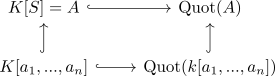

dimension of a k-algebra smaller than the transcendence degree
Proposition
Let $K$ be a field and $A$ a k-Algebra. Let $S \subseteq A$ be a subset which generates $A$.
Then the dimension of $A$ as ring is smaller or equal to the transcendence degree
Proof
Let
Note that
hence it suffices to show that for $\mathrm{tr}(S) < \infty$ it follows that $\mathrm{dim}(A) \leq \mathrm{tr}(S)$.t
$A$ w.l.o.g. integral domain
Suppose $\mathfrak{p} \subseteq A$ is a prime ideal, then by replacing $A$ with $A/\mathfrak{p}$ and using transcendence degree of a quotient algebra
$\mathrm{tr}(S) = 0$
Then all elements of $A$ are algebraic elements (cf. Menge der algebraischen Elemente) and by integral domain integral over a field and field we conclude that $A$ is a field. Then this claim follows from dimension of a field
$0 < \mathrm{tr}(S) < \infty$
Let $\mathfrak{p}_0 \subsetneq \mathfrak{p}_1 ... \subsetneq \mathfrak{p}_m \subseteq A$ be a chain of prime ideals of length $m$. wlog we may assume that $m > 0$, as otherwise $(0) = \mathfrak{p}_0 = \mathfrak{p}_m$ is a maximal ideal and showing that $A$ is a field (cf. Nullideal als maximale Ideal und Körper), where $(0)$ is a prime ideal (cf. zero ideal as prime ideal and integral domain)
Then
defines a chain of prime ideals in the quotient ring
and by dimension of a ring and supremum of quotients we may assume
by setting $\mathfrak{p}_1$ as ideal with height $1$
goal
We show that for a finitely algebraically independent subset $T' = \{a_i + \mathfrak{p}_i \vert a_i \in S\} \subseteq S/\mathfrak{p}_i$ it follows that
Then as $\mathrm{tr}(S/\mathfrak{p}) < \mathrm{tr}(S)$ and by induction (with a zero dimensional ring as base case) we may assume
and hence
or
resp.
lemma
Let $T = \{a_i + \mathfrak{p} \vert i \in \{1,...,n\}\}$ be a a finite set of algebraically independent elements with $n = \mathrm{tr}(S)$ Then by representatives of an algebraically independent set as algebraically independent set we conclude that $a_1,...,a_n$ is algebraically indempendent.
Then by assumption of $n = \mathrm{tr}(S)$ we conclude that $\{a_i\} \subseteq S$ is a maximal algebraically independent subset. Consider the diagram

where the left is given by the generated algebras and the right by resp. quotient field. Then each element $a \in S$ is algebraic over $\mathrm{Quot}(k[a_1,...,a_n])$ as $a_1,...,a_n$ is maximally algebraically independent.
Let $a \in \mathfrak{p}_1 \setminus \{0\}$, w.l.o.g. with $a \in S$ ?. Then $a$ is algebraic over $\mathrm{Quot}(k[a_1,...,a_n])$ and hence there exists a nonzero polynomial $g \in \mathrm{Quot}(k[a_1,...,a_n])[X]$ with $a$ as root. As $\mathrm{Quot}(K[a_1,...,a_n])$ is an Integral domain we may choose an irreducible polynomial with a zero (i.e. the minimal polynomial), hence with $g(0) = \neq 0$ After multiplying out denominators we may assume that $g \in k[a_1,...,a_n]$
Then for
we get
as $a^i \in \mathfrak{p}_1$
But taking a representation $\overline{g}$ of $g_0 \in k[a_1,...,a_n]$ results in a polynomial
with $\overline{g}(a_1,...,a_n) \in \mathfrak{p}$ hence $\overline{g}(a_1,...,a_n) = 0 \in A/\mathfrak{p}$ showing a contradiction of $T' = \{a_i + \mathfrak{p}\}$ as algebraically independent set.